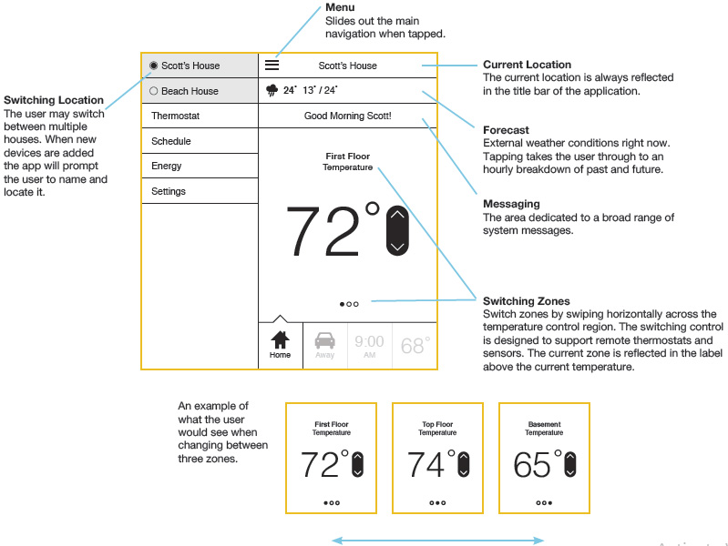

Schneider WiserAir
The goal of this program is to create an innovative home energy monitoring and control platform that enables the services that utilities require while delivering an intuitive and desirable user experience.
The Challenge
Wiser Air transforms Wiser’s partnerships with utility companies, weather forecast providers (DTN) and energy data providers (AutoGrid and EcoFactor) into a simple, compelling experience for users. It turns the complex realities of energy management into something any homeowner will enjoy.
- - Contextual Intelligence
- - A Platform to Learn and Teach
- - Emotional Appeal
The Design Phase
User Research Session
We held two user research sessions where we met with 11 people who are current users of different thermostats. We conducted various exercises to understand their underlying needs, desires, and expectations around their thermostat and energy use. They used mobile and device prototypes while we observed and received feedback on the interactions, flows and visual design. We synthesized our learnings as we developed our ideas.
User Interview Session
"I’d love to see what the weather is like as I’m walking out the door. If my thermostat can warn me that I need an umbrella that would be great."
"Most companies make the mistake of giving too much information to the user. Providing the right information is what creates a desirable experience."
"There’s something really nice about my thermostat knowing my name and starting the day with a personalized message."
"Users don’t want to constantly tweak and monitor their thermostats. They want to set it and forget it. Things need to happen in the background."
"Instantaneous feedback on how much energy my AC was using could have saved me hundreds of dollars on my monthly bill."
Application Design
We try to capture key elements of the visual and interaction design for the application and the thermostat design.
Our work focuses on the “hero moments” of the interaction - the exchanges that people will both use most frequently and those that, while they may be experienced less frequently, have a large impact on the overall experience.
Application Overview
The application is optimized so that users may perform the majority of tasks from the home screen, and quickly navigate to sections that allow them to plan and learn.
The application relies on traditional navigation, but also provides contextual and timely navigation through the messaging system.
Setup Flow
The setup routine is an opportunity to establish the tone, the intelligence, and timeliness of Wiser Air.The application establishes a caring and informed personality by acknowledging the user’s region and current season.
Core Control
- Help the user do almost everything from a single screen
- Be fun, be personal, and be timely
- Bring critical data forward, and link it to helpful actions
Home Screen and Navigation
All the major functions are immediately available. The full navigation bar is a click away. Some comments were:
“Changing the temperature is a breeze. It’s right there and it’s easy to access.”
“Seeing relevant messages pop up throughout the day is thoughtful. It shows that they care.”
“The ability to control two thermostats for two separate homes, from my phone, would make managing my energy much easier.”

Forecasting
- Tie the weather conditions to a user’s schedule
- Associate weather conditions with pricing
- Help people be comfortable outside, not only inside
Weather / Energy
Users can view detailed information about that day’s weather forecast and schedule. There is also a bar illustrating dynamic pricing so users are aware of the cost of energy. Some relevant qoutes were:
“This is helpful information for energy geeks like me. I can easily access it from the home screen yet forget about it when I don’t want to see it.”
“If this provides more accurate weather data then my current weather app. I’m switching over to using this.”
“Give users contextual hints and tips based on current usage.”
Energy Reporting
Users can view energy reports on a daily, weekly and monthly basis. They can compare indoor to outdoor temperature and see how much they’ve spent on energy. The activity feed on the bottom keeps them informed of important changes that happened throughout the day.
“Comparing how much money I’ve spent that day on energy with how the weather is outside puts things in perspective.”
“Me and my husband are constantly fighting about the temperature. It would be nice to see when he turns up the thermostat and for how long.”
Status & Schedule
- Let users change status immediately
- Let users suspend and restart schedules
- Let users create custom statuses for visitors and special events
Changing Status
From the home screen the user can change their current status, shift the upcoming status or even suspend their schedule. The users provided the following reviews:
“Be simple, but don’t be too simple. Plan for failures and have back-up pathways users can access functions they need.”
“Seeing what’s going to happen next on my thermostat gives me a sense of control and confidence.”
“Scheduling can get really complicated. The fact that I can change elements of scheduling from my home screen makes it less intimidating.”
Messaging
Messages are piped in through the home screen. The right selection of messages make the application more personal, contextual, educational and responsive to critical changes. The application home screen contains the key UI elements for performing most of the day to-day tasks on the thermostat. Additionally, it contains a messaging region which allows for a greater variety of content and interactions.
User Interface: Sound
Adding the right sounds to your interface has a few key benefits.
Sound provides feedback. It can aid with things like finishing automated tasks, completing a workflow or telling a user when they have successfully clicked a button. It can also tell them when they make a mistake. Sound helps make a device or application more human. The right sound on startup, shutdown, or completion of a task feels completely natural. A sound can be its own signature moment.
Visual Design
Our process combined an organic exploration of Wiser’s brand and the interaction landscape. Combined with rapid prototyping and user research sessions, we were able to create an ecosystem that expresses the brand and connects with the user.
Visual Language: Color
Green is a common thread throughout the app. It ties everything together and draws a connection with the brand to the diverse functions of the app. Secondary colors provide clarity and emphasis. Schneider’s secondary palette provides accent colors for key moments and pieces of data.

Visual Language: Typography
Helvetica Neue for large numerals and tiny labels. Helvetica is a classic. It has beautiful numerals, and near universal recognition.
Avenir for copy, buttons, and just about everything elseAvenir is clean, modern, elegant and a bit quirky. It’s easy to read and manages to feel humanist without being silly.
Visual Design